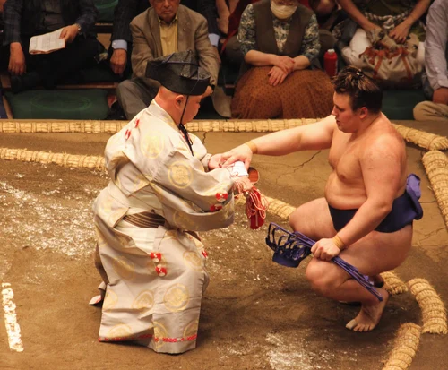
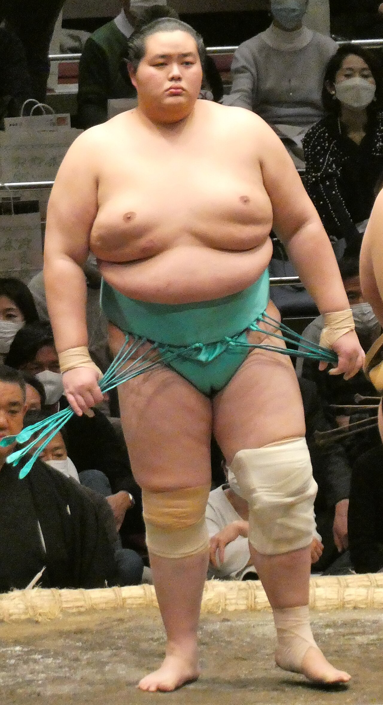
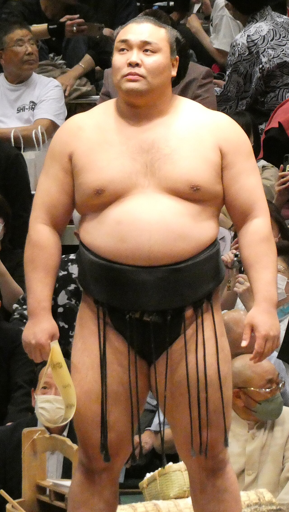

What is the rank of Ozeki?
The ozeki, or champion, rank is the second highest rank in sumo, and is the second highest of the san'yaku, the title holder ranks. Technically, there must be at least two ozeki on the banzuke, the rankings chart, but this may not haappen all the time in practice. If there are less than two ozeki, then one or more yokozuna will be designated as "yokozuna-ozeki". There's also no limit to how many ozeki there can be, with a record of six ozeki on the banzuke being made in 2012.

